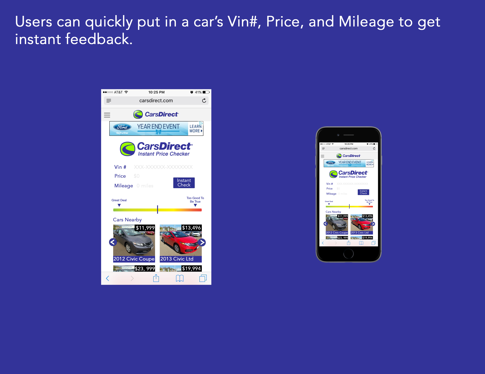

This was done as part of an application process for a user experience design role. The goal was to create a wireframe for a web app to price check cars. The app takes just three inputs and is supposed to let you know whether a deal is good or bad, as well as recommend similar cars in your area. In total, about seven hours was spent from brainstorming to completion of wireframes and pitch deck. Because of this, I believe it can still be refined much further. As such, I will offer some personal critiques of my own work during this time.
My first critique here is that I would just like to improve the look of this slide. It was a bit rushed and I made the mistake of scaling down the wireframe on the right rather than scaling up the Iphone. I think the "Cars Nearby" images should be closer together to be more pleasing to the eye. I think it would be interesting to see aspects of this change as the user types into the queries, such as the model appearing in an image to verify the look of the car before hitting the "Instant check" button. This might be an interestiung feature for the Vin#, as learning that a car is stolen or has another serious issue woiuld be an immediate red flag. Ideally, I would make this wireframe without the duplicate logos and advertisement, but I kept these to realistically represent the appearance as this site utilizes advertisements for revenue.
Here I wish I had maybe switched the direction of the gradient as typically good things seem to run left to right. Additionally, I think I could have explained the significance of "too good to be true" over the red end(And again, enlargened the image). The too good to be true is supposed to alert buyers to problems with the car, but not deter them from a spectacular deal.
I think it is common for those making interfaces to try and rely only on imagery rather than text. I was proud to communicate some of my imagery with text here. After looking up the average age of car buyers (~52), I realized that while I like to make things based on more current design trends, I should design the entirety of this for users of any age. Unlike a pregnancy test, users can read a short script detailing why a car is a good or bad deal.
Next to the Vin# on the right, a magnifying glass is placed as a link to see the car's history in depth. I think this link should also appear as hypertext in the readout below as well.
I think the entire query area looks a bit cluttered with ther appearance of the model image replacing the results button. I think reducing the size of this image may help.
Something I wanted to do here but did not was organize the rows of cars with a manufacturer logo. It may have been a good idea to leave this out just to keep the interface more clean. I also left out sliders below these which could help sorting the car. I think sliders are important rather than drop down menus or queries just because they are more modern and appealing to the eye. I think this particular site could use a revamp to compete with other car buying engines out there.
This might be the most hastily put together part, but I someone like the concept. The spacing should be worked out between this survey button element, text explanation, and "Cars Nearby" portions. I like the thought of using these faces rather than a yes or no because it keeps the site more playful and somewhat gamelike. Something I could have done is emphasized the look of the two faces being separate buttons. Coloriung them also may improve thir look, but I would not want to make this page too much busier.